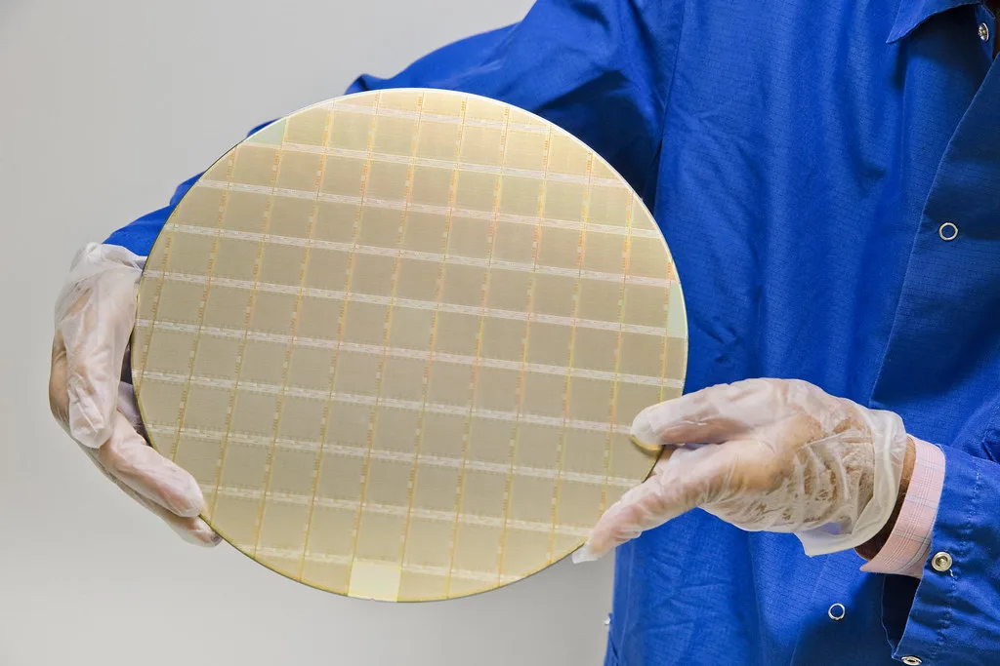

코스피 5거래일 연속 상승…외국인 3조 순매수에 6977선 마감
코스피 지수가 지난 14일 5거래일 연속 상승세를 이어가며 6977.94에 마감했다. 전 거래일 대비 164.60포인트, 2.42% 오른 수준으로, 장중 한때 7000선을 넘어서기도 했다. 외국인 투자자들이 3조1568억원어치를 순매수하며 4거래일 연속 매수세를 이어간 반면, 개인과 기관은 각각 1조7201억원, 1조4100억원어치를 순매도하며 차익 실현에 나선 것으로 나타났다. 외국인 자금이 지수 상승을 주도한 흐름이 뚜렷했던 셈이다.
이번 상승세의 배경으로는 미국의 물가 지표 안정이 꼽힌다. 미국의 7월 생산자물가지수(PPI)가 시장 예상치를 밑돌면서 다음달로 예정된 미국 연방공개시장위원회(FOMC)에서 기준금리를 동결할 것이라는 기대감이 커졌고, 이는 위험자산에 대한 투자 심리를 자극한 것으로 분석된다. 미국발 긴축 우려가 완화되자 국내 증시에서도 외국인 자금이 대거 유입되며 지수 상승에 힘을 보탰다는 평가다.

업종별로는 반도체 대형주가 상승세를 견인했다. 삼성전자가 2.43%, SK하이닉스가 3.26% 올랐고, 삼성전자우선주도 4.15% 상승했다. 반도체 관련주인 SK스퀘어와 삼성전기도 각각 3.31%, 3.66% 오르며 동반 강세를 나타냈다. 최근 인공지능 서비스 확산에 따른 메모리 수요 증가와 낸드·D램 가격 상승이 반도체 업종 전반의 실적 기대감을 높이고 있는 것으로 풀이된다. 다만 개인과 기관이 동시에 순매도로 돌아선 만큼, 상승 흐름이 이어질지 여부는 이번 주 발표될 미국 소비자물가지수(CPI) 등 추가 지표에 달려 있다는 관측도 나온다.

이번 5거래일 연속 상승은 지난 한 주 동안 코스피가 6600선에서 6900선대까지 단기간에 300포인트 넘게 오른 결과이기도 하다. 지난 12일과 13일에도 각각 반도체주 강세에 힘입어 상승 마감했고, 14일까지 상승세가 이어지면서 투자자들 사이에서는 '7000피' 안착 여부에 관심이 집중되고 있다. 증권가에서는 국내 증시 시가총액의 상당 부분을 반도체 대형주 두 곳이 차지하는 만큼, 이들 종목의 주가 흐름이 지수 전체 방향성을 좌우하는 구조가 당분간 이어질 것으로 내다보고 있다.
원/달러 환율은 같은 기간 하락세를 나타냈다. 14일 서울 외환시장에서 원/달러 환율은 전 거래일보다 1.1원 내린 1418.3원에 마감했으며, 앞서 13일에는 7.7원 내린 1416.1원을 기록한 바 있다. 증시로 외국인 자금이 유입되는 흐름과 맞물려 원화 강세 압력이 이어지는 모습이다. 시장에서는 미국의 금리 정책 변화 기대감이 환율에도 지속적인 영향을 미칠 것으로 보고 있다.
증권업계 관계자들은 이번 상승 랠리가 반도체 업황 개선 기대감과 미국발 통화정책 완화 기대가 겹치며 나타난 결과라고 분석하면서도, 개인과 기관의 매도 물량이 상당했던 만큼 추가 상승을 위해서는 실적 발표 등 펀더멘털 측면의 뒷받침이 필요하다고 지적한다. 반도체 업종을 중심으로 한 국내 증시의 변동성이 당분간 지속될 것으로 예상되는 가운데, 다음 주 발표될 미국 경제 지표와 국내 상장사들의 실적 발표가 향후 증시 방향을 가늠할 주요 변수로 꼽힌다.